Condensed R for Data Science Chapter 2: Data Visualisation
This markdown is part of a series that serves as a condensed help guide that I use to explore R and the tidyverse packages as I work through R for Data Science available here
First, we install/load the relevant packages by installing the tidyverse. This “package” effectively contains all packages developed by the Hadley Wickham:
library("tidyverse")Data Visualisation
In this chapter we will work with the ggplot2 package, but I’m lazy so I just load the entire tidyverse.
We start with some scatter plots of the mpg dataset, Scatter 1.
ggplot(mpg) + geom_point(aes(displ, hwy)) + ggtitle("Scatter 1")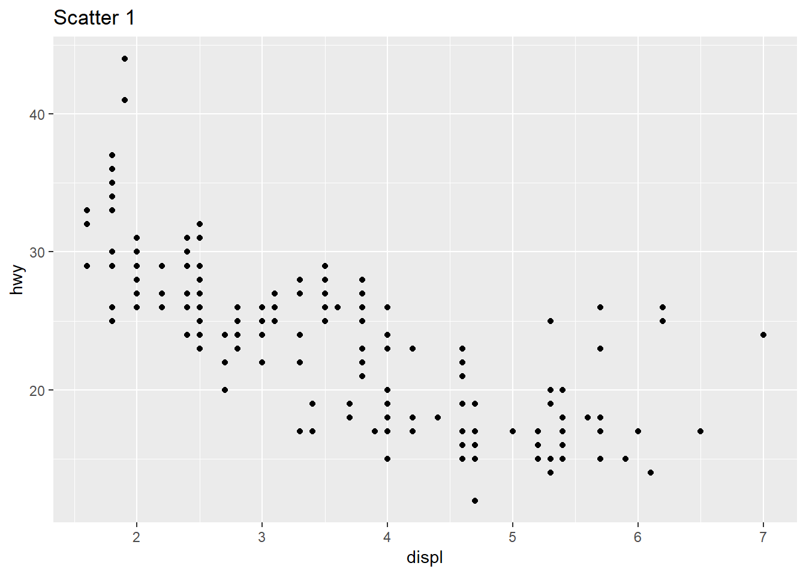
We could (and often should) be explicit about which parameters we are assigning variables to. Notice the mapping, x and y parameters that have been inserted into the code used to generate the previous graph.
ggplot(data = mpg) + geom_point(mapping = aes(x = displ, y = hwy)) + ggtitle("Scatter 1")
The function ggplot() creates an empty graph off the underlying data set. The geom_ functions then add a layer to that.
# Practice
ggplot(mpg) + geom_point(aes(y = hwy, x = cyl)) + ggtitle("Scatter 2")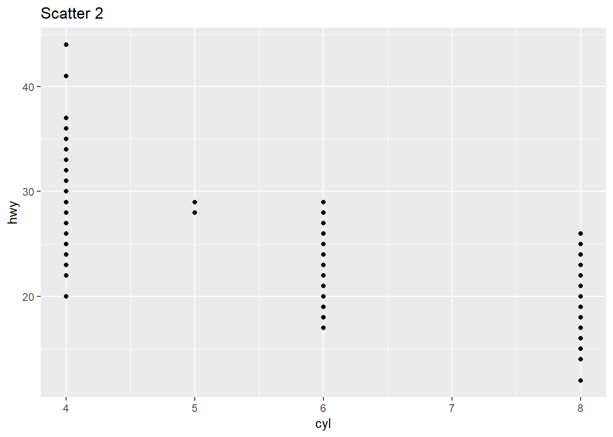
Here is another example:
ggplot(mpg) + geom_point(aes(y = class, x = drv)) + ggtitle("Scatter 3")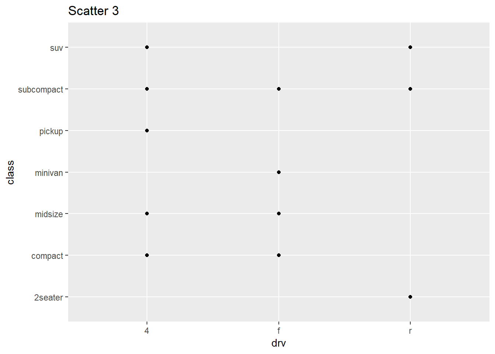
By the way, Scatter 3 is not a useful plot because the variables shown here cannot have a linear relationship.
An epic feature of ggplot2 is that it Can add a third variable to a 2D plot by mapping this variable to an aesthetic – the visual property of the objects in my plot(size, shape, colour of points). This is described as the level. We can use color, size, shape and alpha (transparency) in the aesthetic function to indicate the third variable! This is known as scaling. In essence, just map the aesthetic and ggplot does the rest.
ggplot(mpg) + geom_point(mapping = aes(x = displ, y = hwy, color = class)) + ggtitle("Scatter 4")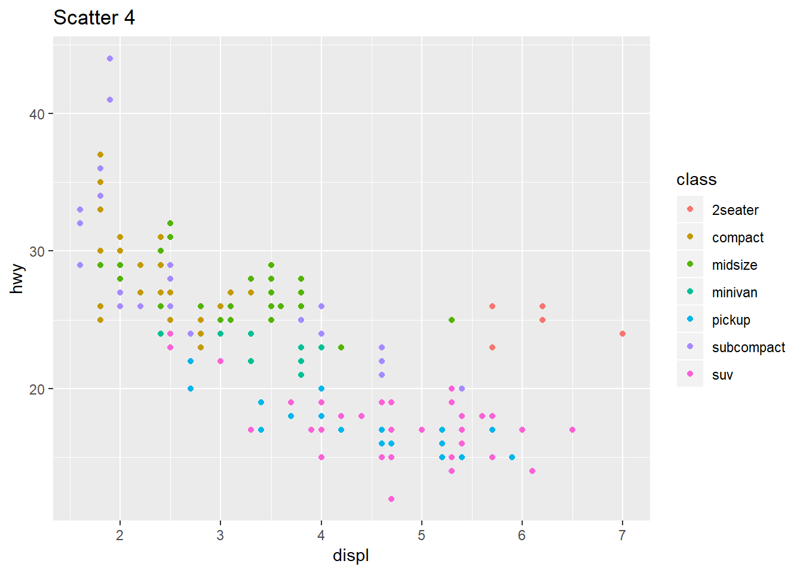
Aesthetic mapping Exercises
ggplot(data = mpg) +
geom_point(mapping = aes(x = displ, y = hwy, color = "blue"))
In the above example, the dots are red despite the color = “blue” specification because it is specified inside the aes() field. Setting the colour and other such parameters uniformly should be outside this mapping field in the layer field.
Possible aesthetics:
- alpha (transparency)
- colour
- fill (the fill arsthetic can also be used in a variable capacity to show different colours for different observations)
- group (use categorical variable here. It can replace color, and groups objects on the plot. See further down.)
- shape
- size
- stroke (understand a little)
You can also map subject to certain constraints e.g.
ggplot(data = mpg) +
geom_point(mapping = aes(x = displ, y = hwy, color = cyl < 6))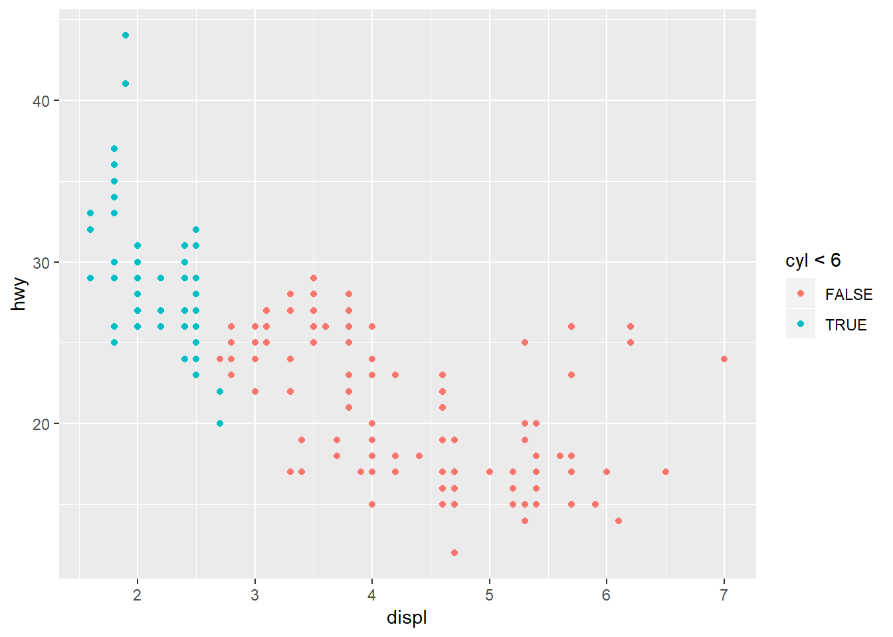
This will show which of the observations adhere to a particular condition or not.
Facets
One way to add additional variables is with aesthetics. Another way, particularly useful for categorical variables, is to split your plot into facets, subplots that each display one subset of the data.
ggplot(mpg) +
geom_point(aes(x = cyl, y = hwy, col = trans)) +
facet_wrap(~ class, nrow = 3)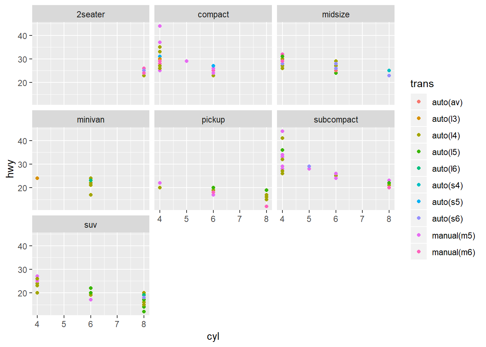
Note: “The first argument of facet_wrap() should be a formula, which you create with ~ followed by a variable name (here “formula†is the name of a data structure in R, not a synonym for “equationâ€). The variable that you pass to facet_wrap() should be discrete.”
Facets can be done for two variables. To do this, add facet_grid() to the plot call. The first argument of this mapping is also a formula.
ggplot(mpg) +
geom_point(aes(x = displ, y = hwy)) +
facet_grid(drv ~ cyl)
To facet with just one variable, use a “.” At the other end of the formula.
Geoms
“A geom is the geometrical object that a plot uses to represent data. People often describe plots by the type of geom that the plot uses.”
We can turn this…
ggplot(data = mpg) +
geom_point(mapping = aes(x = displ, y = hwy))
…into this…
ggplot(data = mpg) +
geom_smooth(mapping = aes(x = displ, y = hwy))## `geom_smooth()` using method = 'loess' and formula 'y ~ x'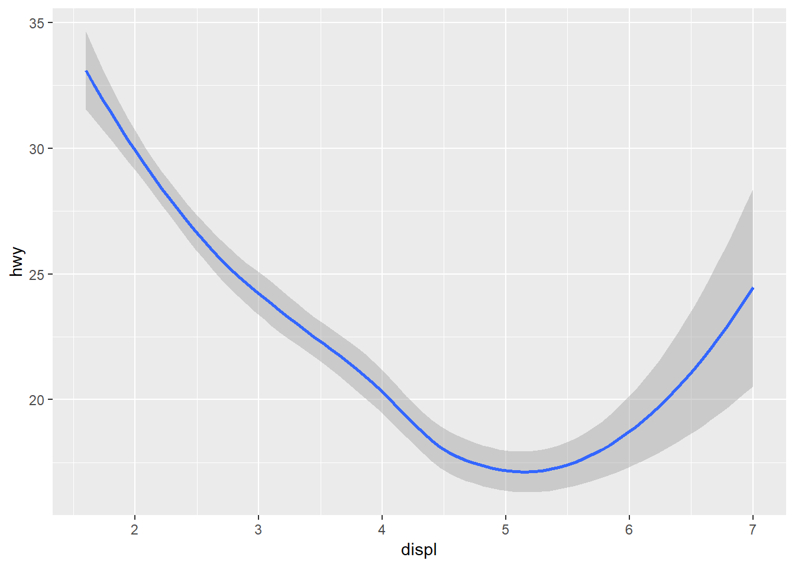
# Loess regression is the default…by changing the geom. Every geom takes a mapping argument, but not every aes() works with every geom. For example, with line types:
ggplot(data = mpg) +
geom_smooth(mapping = aes(x = displ, y = hwy, linetype = drv))## `geom_smooth()` using method = 'loess' and formula 'y ~ x'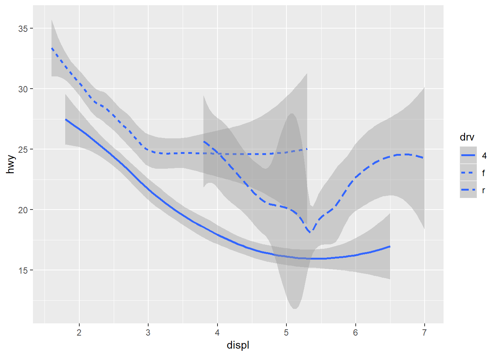
Many geoms use a single geometric object to display multiple rows of data. For these geoms, you can set the group aesthetic to a categorical variable to draw multiple objects (or use color, as previously mentioned).
We can plot multiple geoms for the same data and layer them over each other. This, however, causes repetition in the code. If, for example, the axes change, every geom’s x and y specs would have to change.
ggplot(data = mpg) +
geom_point(mapping = aes(x = displ, y = hwy)) +
geom_smooth(mapping = aes(x = displ, y = hwy))## `geom_smooth()` using method = 'loess' and formula 'y ~ x'
In the case of layering different geoms, we can specify parameters like the axes as global options in the ggplot chart object:
ggplot(data = mpg, mapping = aes(x = displ, y = hwy)) +
geom_point() +
geom_smooth()## `geom_smooth()` using method = 'loess' and formula 'y ~ x'
# Same data passed to different geoms. Epicly enough, we can still add features to each geom that will affect that layer only. For example, notice the colour in the following:
ggplot(mpg, aes(x = displ, y = hwy)) +
geom_point(aes(color = class)) +
geom_smooth()## `geom_smooth()` using method = 'loess' and formula 'y ~ x'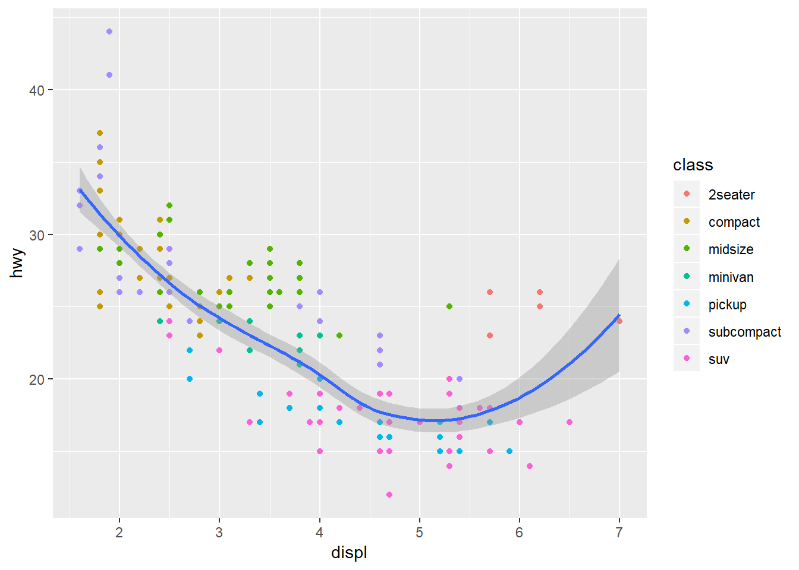
I can also subset the data in a particular geom with filter() from the dplyr package.
ggplot(mpg, aes(x = displ, y = hwy)) +
geom_point(aes(color = class)) +
geom_smooth(data = filter(mpg, class == "subcompact"), se = FALSE)## `geom_smooth()` using method = 'loess' and formula 'y ~ x'
# se = TRUE/FALSE displays confidence interval around the geom_smooth line or not. Geom Exercises
Here I write code to recreate the graphs given in the book.
# Plot 1
ggplot(mpg, aes(displ, hwy)) +
geom_point(size = 5) +
geom_smooth(se = F)## `geom_smooth()` using method = 'loess' and formula 'y ~ x'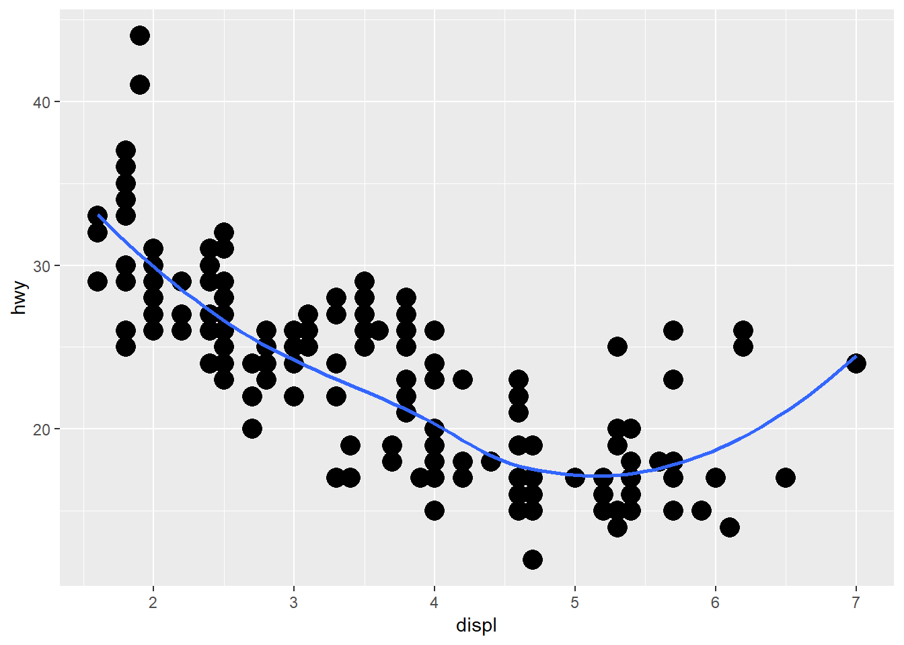
# Plot 2
ggplot(mpg, aes(displ, hwy)) +
geom_point(size = 5) +
geom_smooth(se = F, aes(group = drv))## `geom_smooth()` using method = 'loess' and formula 'y ~ x'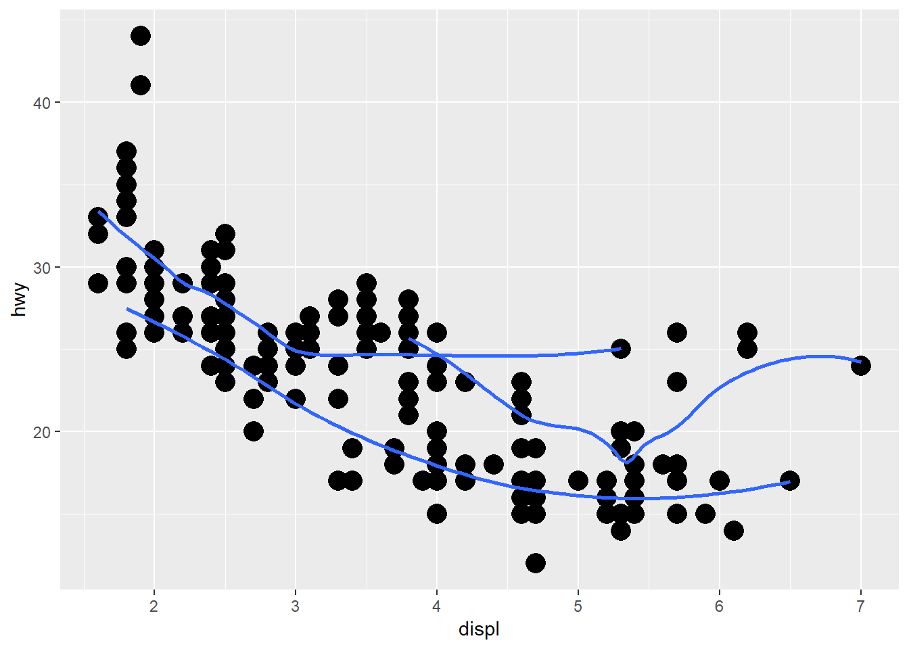
# Plot 3
ggplot(mpg, aes(displ, hwy, colour = drv)) +
geom_point() +
geom_smooth(se = F)## `geom_smooth()` using method = 'loess' and formula 'y ~ x'
# Plot 4
ggplot(mpg, aes(displ, hwy)) +
geom_point(aes(col = drv)) +
geom_smooth(se = F)## `geom_smooth()` using method = 'loess' and formula 'y ~ x'
# Plot 5
ggplot(mpg, aes(displ, hwy)) +
geom_point(aes(colour = drv)) +
geom_smooth(se = F, aes(linetype = drv))## `geom_smooth()` using method = 'loess' and formula 'y ~ x'
# Plot 6 -> think it's with shape? verify
ggplot(mpg, aes(displ, hwy)) +
geom_point(aes(colour = drv)) +
geom_smooth(se = F, aes(linetype = drv))## `geom_smooth()` using method = 'loess' and formula 'y ~ x'
Statistical Transformations
Consider a bar chart based on the diamonds data set:
ggplot(data = diamonds) +
geom_bar(mapping = aes(x = cut))
As you can see, this graph does not use a y-variable. This is because a bar chart creates new values to plot by design. It works with the number of observations within a range or bin and displays the count per bin. This is the same for histograms and frequency polygons. The algorithm that calculates these new values for the graph is called a stat(), short short for statistical transformation.
You can learn which stat a geom uses by inspecting the default value for the stat argument. For example, ?geom_bar shows that the default value for stat is “countâ€, which means that geom_bar() uses stat_count(). stat_count() is documented on the same page as geom_bar(), and if you scroll down you can find a section called “Computed variablesâ€. That describes how it computes two new variables: count and prop.
Generally, stats and geoms are interchangable. We recreate the same plot with the following.
ggplot(data = diamonds) +
stat_count(mapping = aes(x = cut))
This works because every geom has a default stat; and every stat has a default geom. This means that you can typically use geoms without worrying about the underlying statistical transformation. There are three reasons you would use stat() explicitly:
- Overiding the default stat in a particular ggplot because you want a different stat. In the example below we change the default stat from “count” to “identity”. Identity uses the actual value assigned to a variable instead of its count.
# Create a small table with the tribble command.
demo <- tribble(
~cut, ~freq,
"Fair", 1610,
"Good", 4906,
"Very Good", 12082,
"Premium", 13791,
"Ideal", 21551
)
# Now plot the demo table, but override the default stat in the bar chart geom.
# The count geom is overriden to
ggplot(data = demo) +
geom_bar(mapping = aes(x = cut, y = freq), stat = "identity")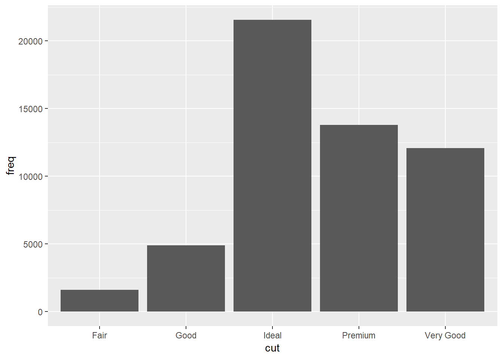
- Override the default mapping of transformed variables e.g. display proportion on y-axis rather than count.
ggplot(data = diamonds) +
geom_bar(mapping = aes(x = cut, y = ..prop.., group = 1))
- You might want to draw greater attention to the statistical transformation in your code.
ggplot(data = diamonds) +
stat_summary(
mapping = aes(x = cut, y = depth),
fun.ymin = min,
fun.ymax = max,
fun.y = median
)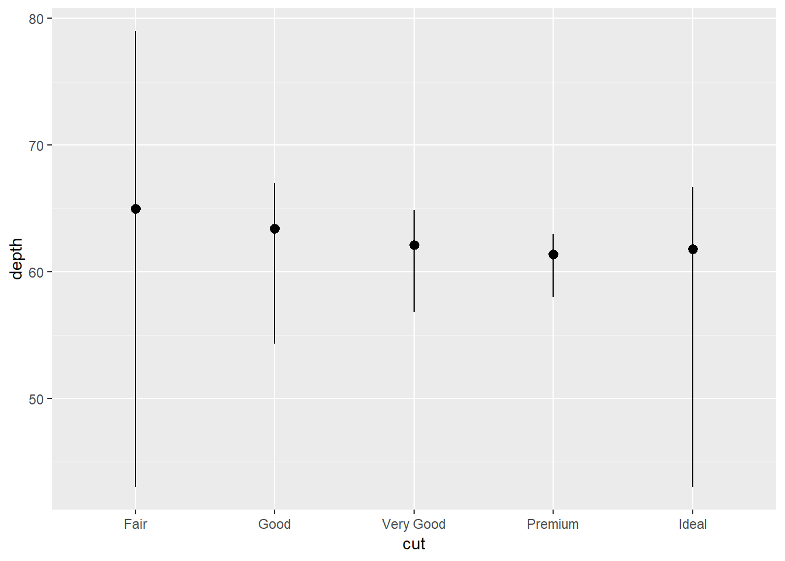
Transformation Exercises
ggplot(data = diamonds) +
geom_pointrange(mapping = aes(x = cut, y = depth, ymin = min(diamonds$depth), ymax = max(diamonds$depth))) #Close enough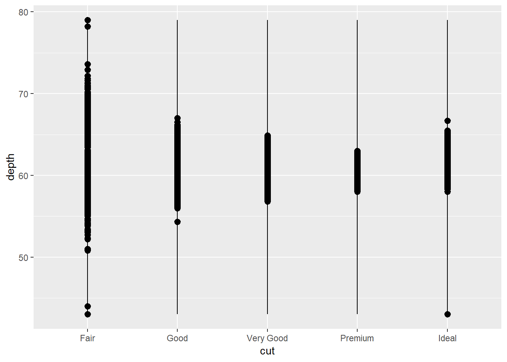
# Automatically groups according to cut, or x variable.
ggplot(data = diamonds) +
geom_bar(mapping = aes(x = cut, y = ..prop..))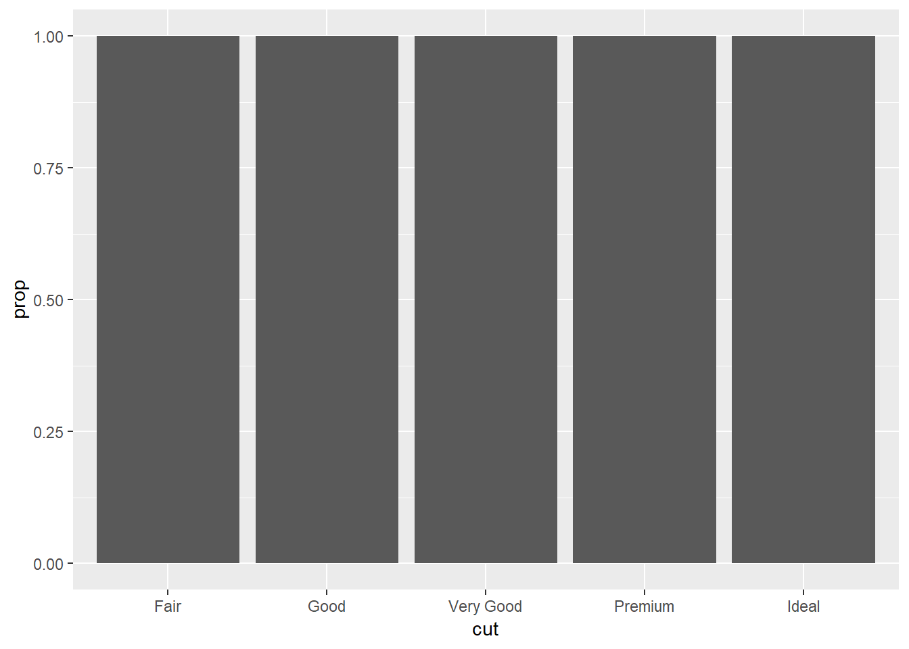
# Needs to group relative to whole x variable. Can say group=1 or group = "x"
ggplot(data = diamonds) +
geom_bar(mapping = aes(x = cut, fill = color, y = ..prop.., group = 1))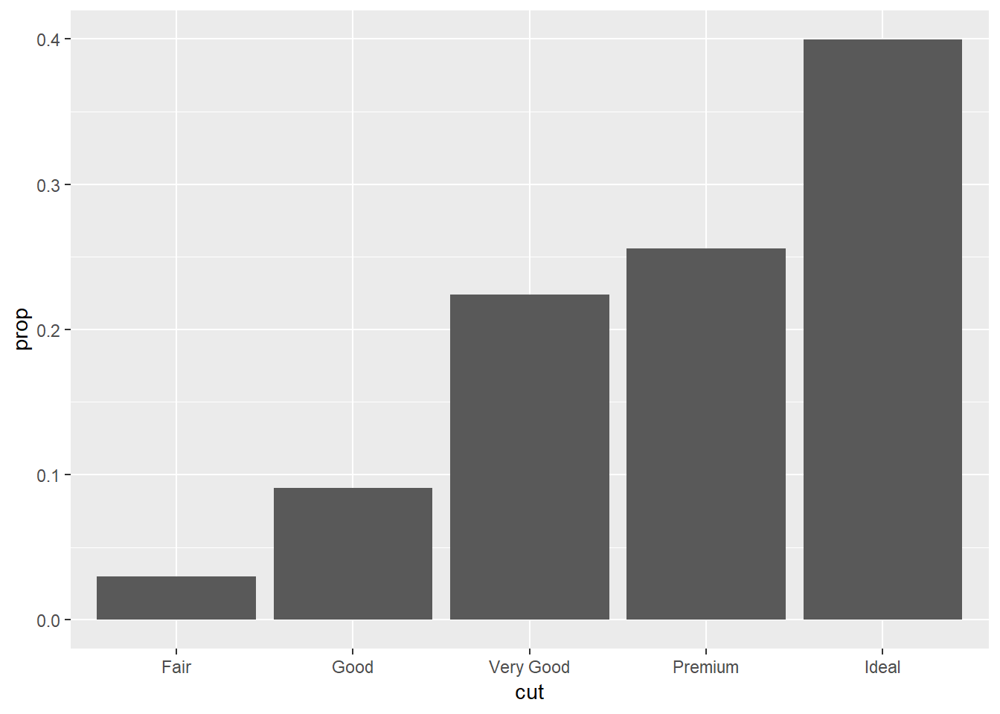
Position Adjustments
You can colour a bar chart using the colour or fill aesthetics. The fill fill argument is more useful, since you can map a variable to this aesthetic to display different colours. A stacked bar chart of sorts.
# The "colour aesthetic" adds the border.
ggplot(data = diamonds) +
geom_bar(mapping = aes(x = cut, colour = cut))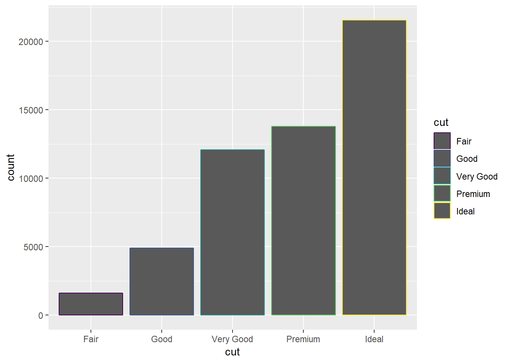
# The "fill" aesthetic adds the interior colour.
ggplot(data = diamonds) +
geom_bar(mapping = aes(x = cut, fill = cut))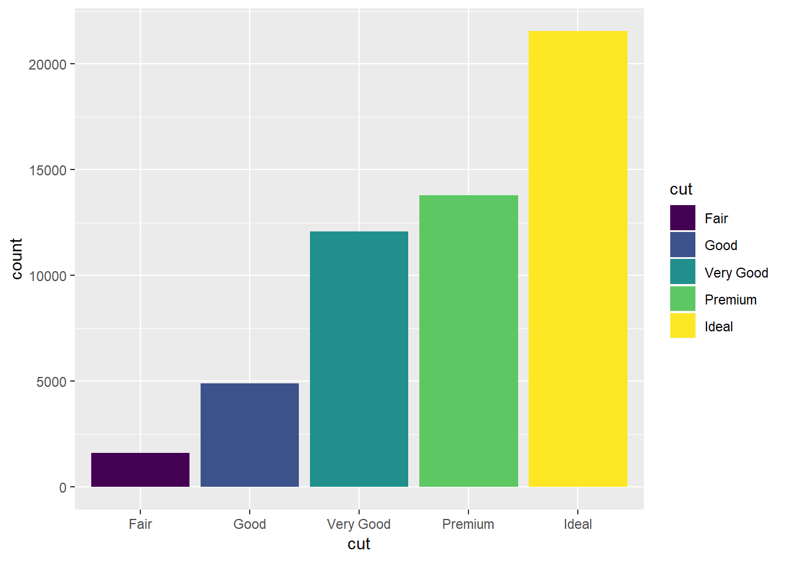
The fill aesthetic can also be used as a variable to show different combinations.
ggplot(data = diamonds) +
geom_bar(mapping = aes(x = cut, fill = clarity))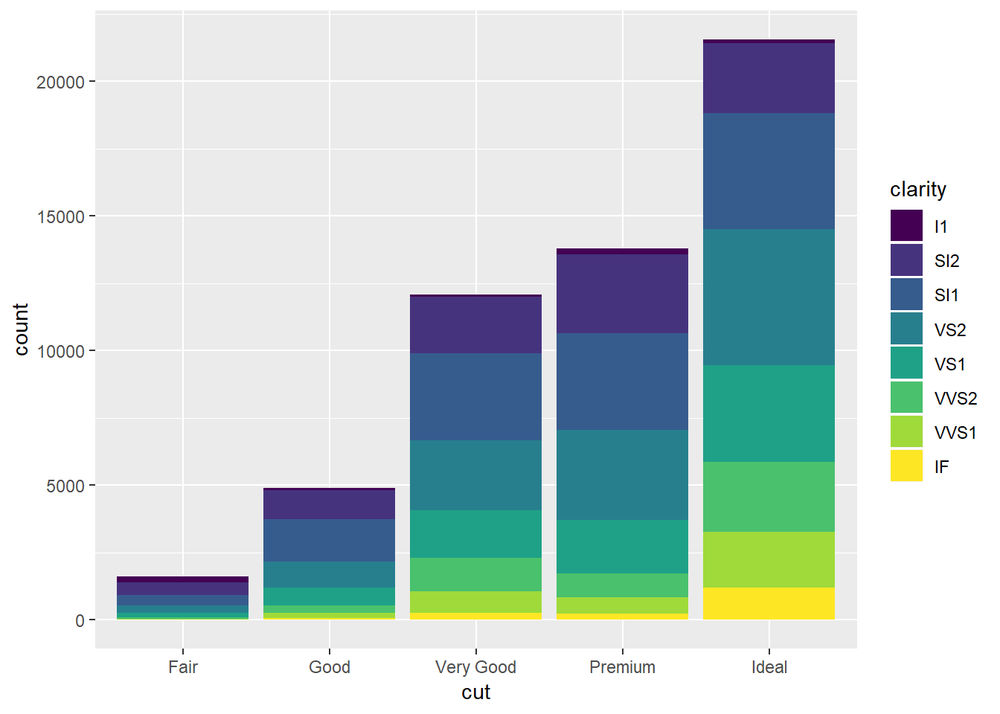
The stacking is performed automatically by the position adjustment specified by the position argument. If you don’t want a stacked bar chart, you can use one of three other options: “identity”, “dodge” or “fill”.
position = identity
position = “identity” will place each object exactly where it falls in the context of the graph. This is not very useful for bars, because it overlaps them vertically. To see that overlapping we either need to make the bars slightly transparent by setting alpha to a small value, or completely transparent by setting fill = NA.
# Position = identity uses the raw value of the observation. Here, it places the bar at it's exact location
ggplot(data = diamonds, mapping = aes(x = cut, fill = clarity)) +
geom_bar(alpha = 0.2, position = "identity")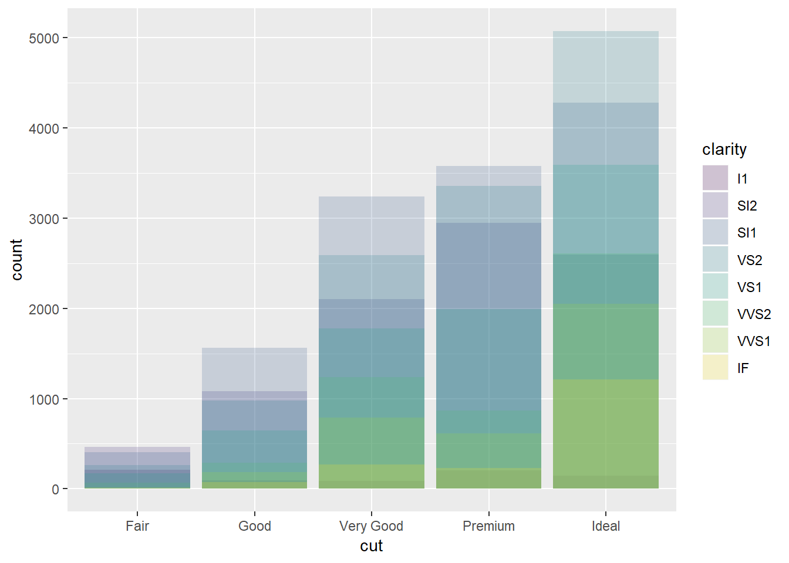
# Here we specify the fill as NA. and empty the bars.
ggplot(data = diamonds, mapping = aes(x = cut, colour = clarity)) +
geom_bar(fill = NA, position = "identity")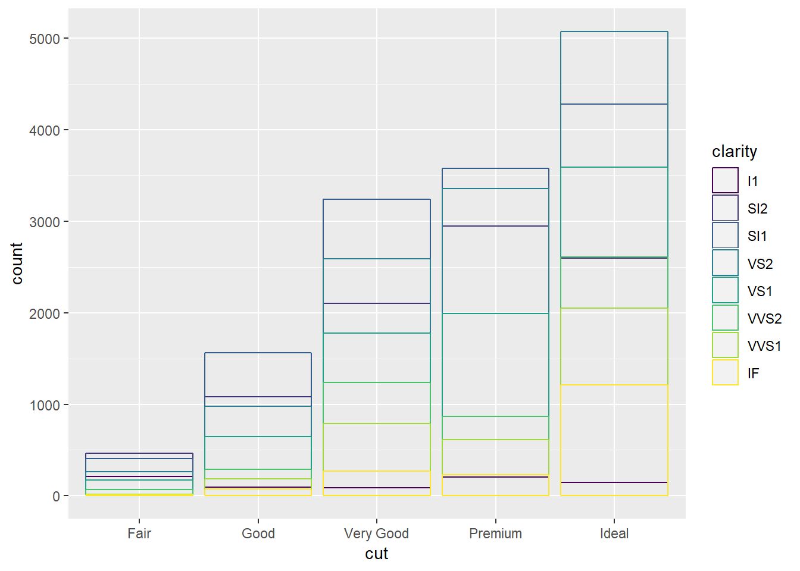
The identity position adjustment is more useful for 2d geoms, like points, where it is the default.
position = fill
position = “fill” works like stacking, but makes each set of stacked bars the same height. This makes it easier to compare proportions across groups.
ggplot(data = diamonds) +
geom_bar(mapping = aes(x = cut, fill = clarity), position = "fill")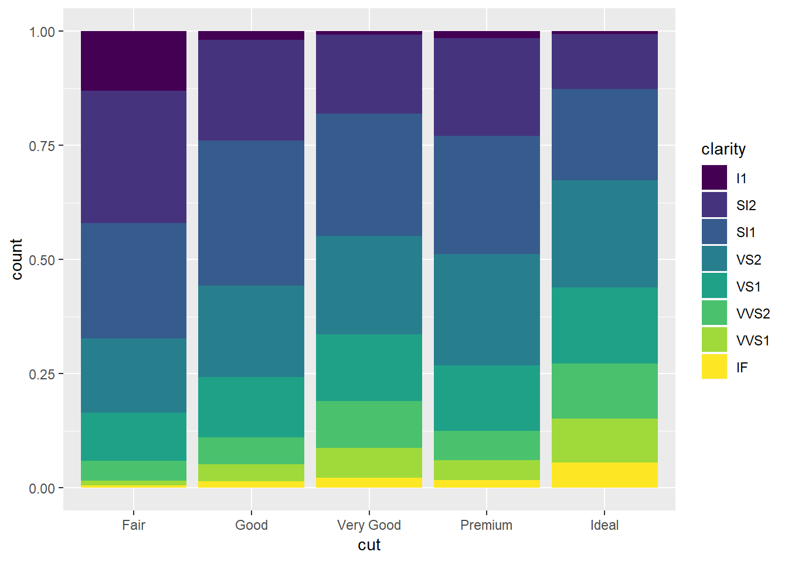
position = dodge
position = "dodge" places overlapping objects directly beside one another. This makes it easier to compare individual values.
ggplot(data = diamonds) +
geom_bar(mapping = aes(x = cut, fill = clarity), position = "dodge")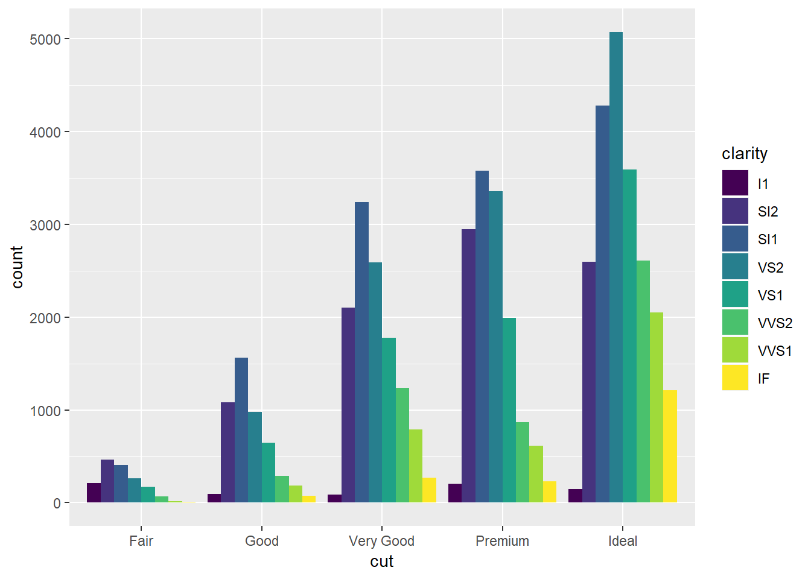
Something interesting: position = jitter
Recall our first scatterplot.
ggplot(mpg) + geom_point(aes(displ, hwy)) + ggtitle("Scatter 1")This plot contains only 126 points even though there are 234 observations in the dataset. The values of hwy and displ are rounded so the points appear on a grid and many points overlap each other. This problem is known as overplotting. This arrangement makes it hard to see where the mass of the data is.
This gridding and overplooting can be avoided by setting position to “jitter”. Position = “jitter” adds a small amount of random noise to each point. This spreads the points out because no two points are likely to receive the same amount of random noise. Here is an expample:
ggplot(data = mpg) +
geom_point(mapping = aes(x = displ, y = hwy), position = "jitter")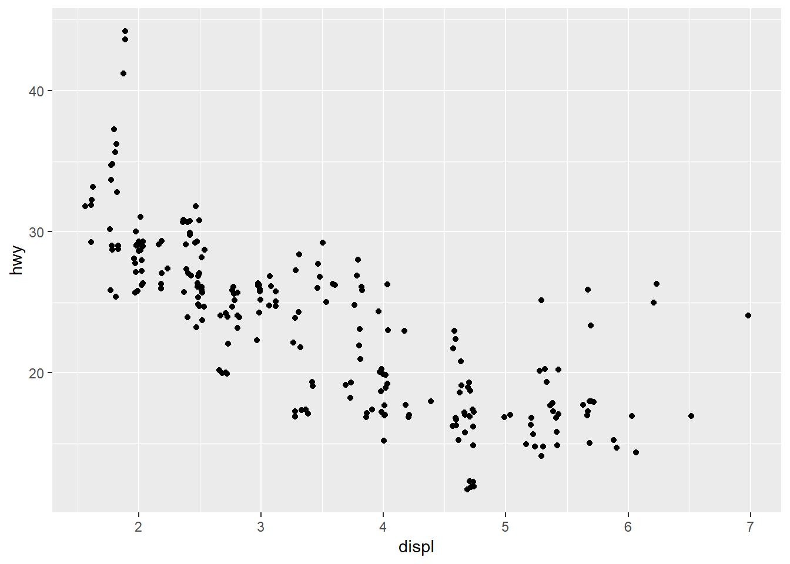
Adding randomness seems like a strange way to improve your plot, but while it makes your graph less accurate at small scales, it makes your graph more revealing at large scales.
Because this is such a useful operation, ggplot2 comes with a shorthand for geom_point(position = "jitter"): geom_jitter().
To learn more about a position adjustment, look up the help page associated with each adjustment: ?position_dodge, ?position_fill, ?position_identity, ?position_jitter, and ?position_stack.
Position Adjustment exercises
# How to fix this
ggplot(data = mpg, mapping = aes(x = cty, y = hwy)) +
geom_point()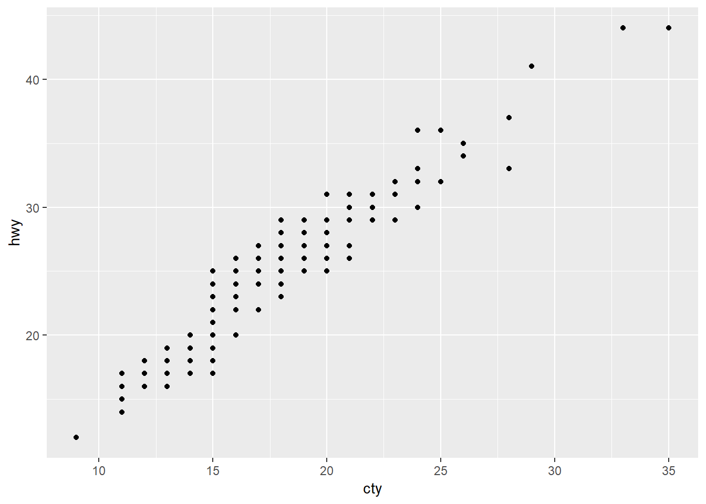
# Do this:
ggplot(data = mpg, mapping = aes(x = cty, y = hwy)) +
geom_count()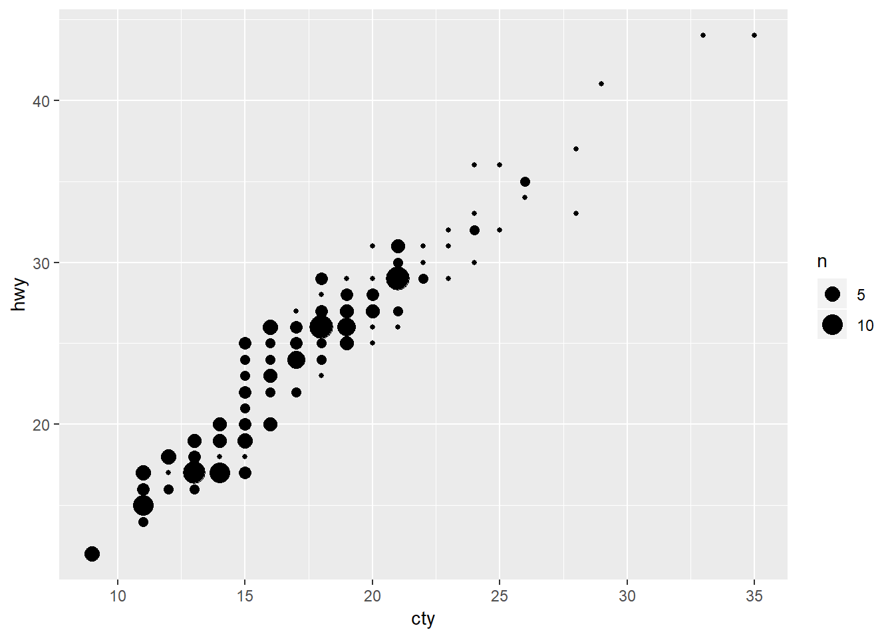
ggplot(data = mpg, mapping = aes(x = cty, y = hwy)) +
geom_jitter()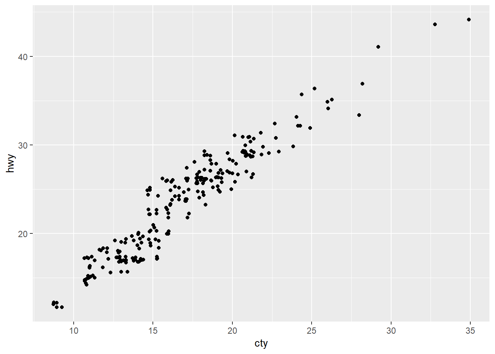
# Default postion is dodge, putting data displays next to each other.
ggplot(data = mpg, mapping = aes(x = trans, y = hwy)) +
geom_boxplot()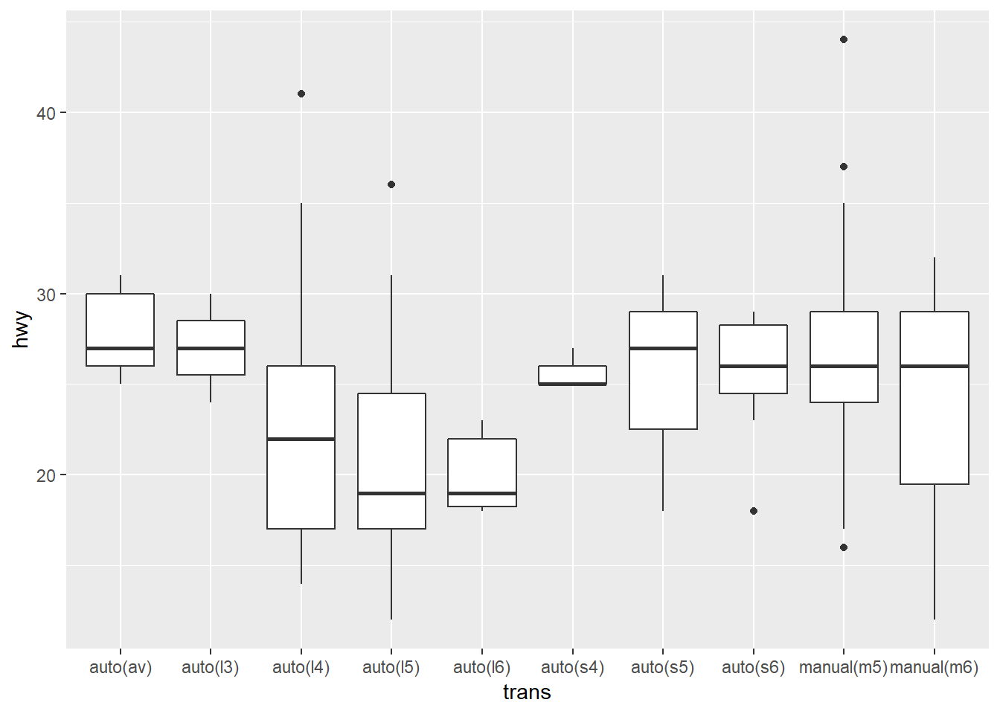
Coordinate Systems
The default coordinate system is the Cartesian coordinate system where the x and y positions act independently to determine the location of each point. There are a number of other coordinate systems that are occasionally helpful.
Coord_flip()
coord_flip() switches the x and y axes. This is useful (for example), if you want horizontal boxplots. It’s also useful for long labels: it’s hard to get them to fit without overlapping on the x-axis.
# Normal Plot
ggplot(data = mpg, mapping = aes(x = class, y = hwy)) +
geom_boxplot()
# Add new coordinate system:
ggplot(data = mpg, mapping = aes(x = class, y = hwy)) +
geom_boxplot() +
coord_flip()
Coord_quickmap()
coord_quickmap() sets the aspect ratio correctly for maps. This is very important if you’re plotting spatial data with ggplot2.
if (!require("maps")) install.packages("maps")
library(maps)
nz <- map_data("nz")
ggplot(nz, aes(long, lat, group = group)) +
geom_polygon(fill = "white", colour = "black")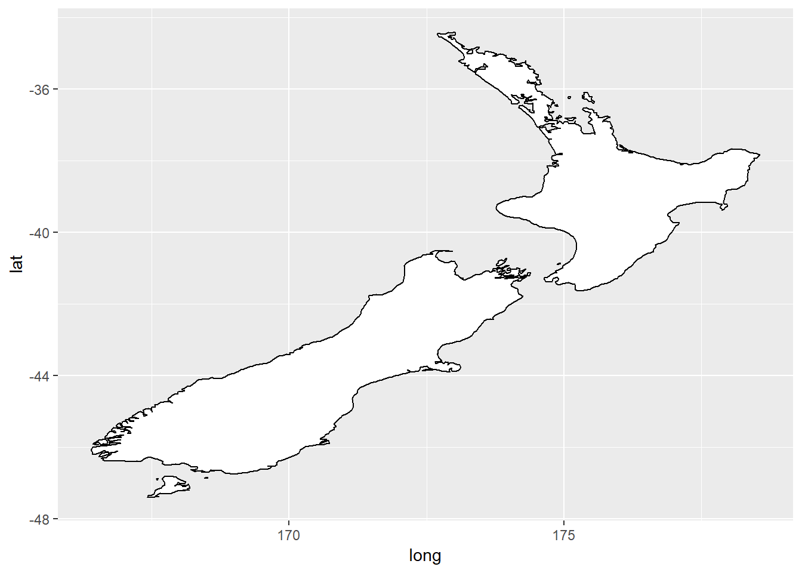
# Quickmap sets the correct aspect ratio
ggplot(nz, aes(long, lat, group = group)) +
geom_polygon(fill = "white", colour = "black") +
coord_quickmap()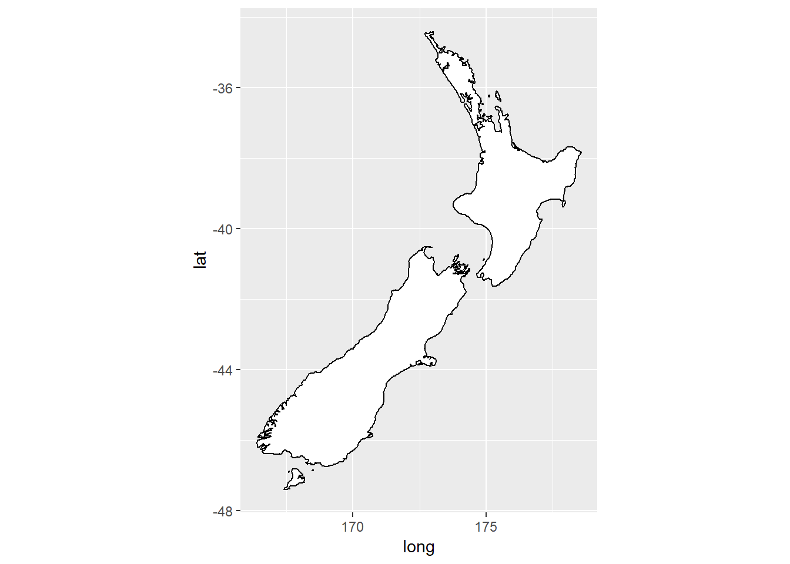
Coord_polar()
coord_polar() uses polar coordinates. Polar coordinates reveal an interesting connection between a bar chart and a Coxcomb chart.
bar <- ggplot(data = diamonds) +
geom_bar(
mapping = aes(x = cut, fill = cut),
show.legend = FALSE,
width = 1
) +
theme(aspect.ratio = 1) +
labs(x = NULL, y = NULL)
# flipped bar chart
bar + coord_flip()
# Coxcomb chart
bar + coord_polar()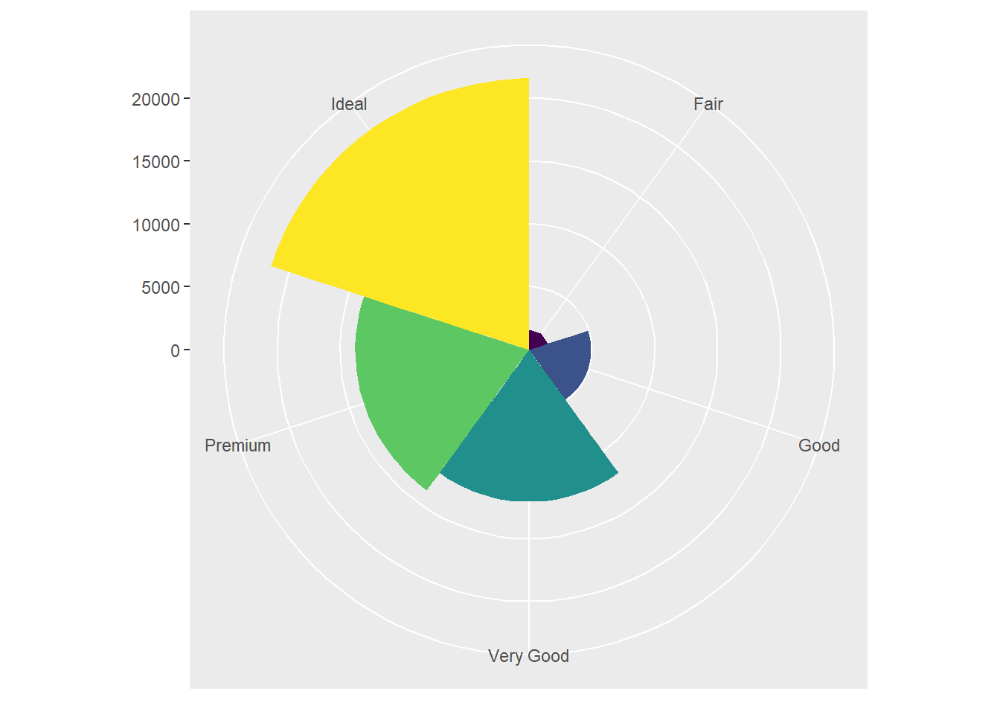
Coordinate Systems Exercises
ggplot(data = mpg, mapping = aes(x = cty, y = hwy)) +
geom_point() +
geom_abline() + #adds line to graph by slope and intercept
coord_fixed() # Default ratio is 1. 1 unit of x is the same as 1 unit of y
Layered Grammar of Graphics
Read more on that here
To conclude, the chunk below shows the basic syntax structure of ggplot grammar:
# ggplot(data = <DATA>) +
# <GEOM_FUNCTION>(
# mapping = aes(<MAPPINGS>),
# stat = <STAT>,
# position = <POSITION>
# ) +
# <COORDINATE_FUNCTION> +
# <FACET_FUNCTION>